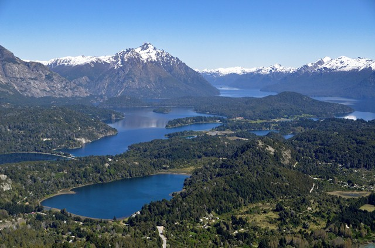
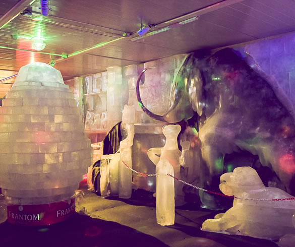

Bariloche es una ciudad ubicada entre bosques milenarios, montañas cubiertas de nieve y lagos cristalinos, en la provincia de Río Negro, Argentina. Se trata de una postal de nuestra Patagonia. Una ciudad anfitriona por excelencia, enmarcada por algunas de las bellezas naturales más importantes del país.

Sobre Bariloche
La ciudad está ubicada dentro del parque nacional Nahuel Huapi, junto a la cordillera de los Andes. En el 2012 fue declarada capital nacional del turismo de aventura, y en el 2015 capital nacional del chocolate.
Vení a disfrutar de Bariloche las cuatro estaciones del año. Encontrarás una naturaleza que premia a cada visitante con paisajes maravillosos, desde picos nevados y lengas cobrizas, hasta valles cubiertos de flores y aguas cristalinas.
En Bariloche tenés variedad de actividades para disfrutar: excursiones tradicionales, paseos lacustres, nieve para todos los gustos, la mejor gastronomía, turismo joven, salidas románticas, actividades familiares, aventura, tranquilidad y una agenda cultural diversa. La ciudad te ofrece tantas opciones que vas a querer visitarnos una y otra vez.

Bienvenidos a Bariloche
Llegaste a la Patagonia, al parque nacional Nahuel Huapi y estás a 1680 km de la ciudad de Buenos Aires. Bariloche es uno de los lugares más intensos e increíbles de Argentina. Vas a descubrir vistas impresionantes, lagos, arroyos, ríos de deshielo y montañas. Vas a disfrutar del aire puro, y de los paisajes que se tiñen del color de cada temporada. El reverdecer del generoso sol del verano, el arco iris ocre de los otoños, el estallido de colores en primavera y el brillante manto blanco que cubre los inviernos.
Bariloche te carga de energía y te llena de paz. Viví una aventura de sensaciones. Sentí el pique de la caña cuando pescás una trucha, observá los cauquenes, las bandurrias y los teros que anidan en las canchas de golf, escuchá el sonido de los esquíes sobre una pista recién pisada y acariciá el calor de las chispas de la chimenea que se cuelan en la nieve entre copo y copo.
La gastronomía, con la más alta calidad de servicios, fusiona la cultura europea con nuevos sabores: carnes de caza, pescados, carnes ahumadas, quesos y frutos del bosque son la materia prima para los platos más exquisitos de la región. Un viaje de sabores que quedará guardado en tu memoria: carpaccio de trucha, strudel de cordero y el tradicional curanto de Colonia Suiza. De postre siempre gana el chocolate, en fondue, bebido o en rama.
Con alojamientos de calidad, la oferta de hoteles de nivel internacional, hosterías, cabañas, hostels, campings y refugios de montaña dan cuenta de las más de ocho décadas de trayectoria turística.
Historia de Bariloche
Entre 1876 y 1902 el Dr. Francisco P. Moreno, perito argentino en límites, recorre exhaustivamente la región. En sus descripciones destaca que Bariloche "... contiene la reunión más interesante de bellezas naturales que he observado en Patagonia...". El perito se vinculó con las sociedades indígenas, intervino en las disputas de límites y recibió tierras en agradecimiento, por parte del gobierno, debido a sus exploraciones en la Patagonia y a los servicios prestados a la Nación. En un gesto histórico donó estas tierras en 1903 para la creación del primer parque nacional de Argentina "con el fin de que sea conservado como parque natural (...) para el mejor provecho de las generaciones presentes y de las venideras, siguiendo el ejemplo de Estados Unidos y de otras naciones que poseen soberbios parques naturales". Además promovería la actividad turística, que en 1934 obtendría un fuerte impulso con la llegada del ferrocarril.
Moreno muere en la pobreza, en 1919, a los 67 años. Sus restos descansan en la isla Centinela, en el lago Nahuel Huapi, a poca distancia de la costa de Bariloche.